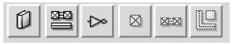
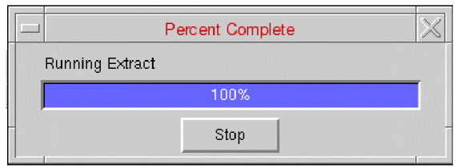

Standalone Abstract Generator Interface
The standalone Abstract Generator interface includes the following components to help you accomplish a wide range of tasks.
The following table describes the main components of the form.
| UI Component | Description |
|
When you start Abstract Generator for the first time, the main window appears. The application title bar contains the name of the application and the name of the current library if one has been set. If no library has been opened, the title bar of the application displays no current library next to the name of the application, as is shown in the figure above. |
|
|
The menu bar provides access to all Abstract Generator operations. You can also perform some of these operations by quickly using the buttons on the toolbar below the menu bar. Menu commands and toolbar buttons are grayed out when they are not available or do not apply in a particular scenario. For example, until you set a library you cannot import logical or layout information, so these and most of the other commands will be grayed out. Similarly, you cannot use the abstract generation steps until you have selected one or more cells in the Cell Preferences for Abstract Generation |
|
|
The toolbar is located below the pull-down menus and provides six button shortcuts to the most commonly used functions in Abstract Generator. Moving from left-to-right, the first three buttons are associated with functions in the File menu and the last three with functions in the Flow menu.

The left-to-right sequence of the buttons implies the basic flow in the abstract generation process, that is, set the current library, import data, and then run the abstract generation steps. You can use these functions in any permitted sequence to achieve more complex flows. Illegal button sequences are prevented by graying-out unavailable functions.
|
|
|
The exists on the left of the main application window below the menu bar and toolbar. The Bin pane displays the system bins and user bins, if any, and the number of cells in each bin. The number next to each bin name in the Bin pane indicates the number of cells in that bin. In the figure above, all the bins are empty. See Bin Preferences for Abstract Generation. |
|
|
The Cell pane is situated on the right of the main window below the menu bar and toolbar. It lists the cells contained in the selected bins and reports the status of those cells. You need to select at least one cell before you can run any of the flow steps or view a status report on a cell. See Cell Preferences for Abstract Generation. |
|
|
The Log window is located in the bottom half of the Abstract Generator main window. The log displays all user interactions with Abstract Generator, including the display of version information on startup, error, warning, and info messages, and TCL/SKILL commands that have been input during a session. Above the Log window, Abstract Generator provides the interface language Interpreter Options, TCL or Skill. Skill is the default and recommended language option. The LOG, ERROR, WARNING, and INFO entries in the Log window are color coded to make it easier to locate serious problems. The LOG and INFO entries are highlighted in BLUE, WARNING messages in ORANGE, and ERROR messages in RED. Each ERROR, WARNING, and INFO message also has a unique message identifier, such as (ABS-246). In this identifier, “ABS” represents “Abstract Generator”, and “246” represents the unique number for identifying the message. All ERROR and WARNING message identifiers are highlighted in clickable BLUE hyperlinks. Clicking the identifier invokes the Doc Assistant in your browser window that displays extended description and possible workaround for the particular ERROR or WARNING message you clicked on. |
|
|
The TCL/SKILL command entry field is at the bottom of the Log window and extends up to under the Command History window. In this field, at the |
|
|
The Command History window provides a list of all the TCL/SKILL commands that have been entered in the command entry field. This window helps you save time in re-typing a command. Double-click to select a command in this window, then place your cursor over the Command Entry Field, and click the middle mouse button to copy the command in the command entry field. Alternatively, you can also scroll through the commands listed in the Command History window by using the cursor keys on the keyboard, with whatever command you have highlighted appearing in the command entry field ready for use. |
|
|
The Percent Complete message box lets you monitor the progress of the current step. The label on the Percent Complete message box tells you what operation is currently being tracked, for example Running Extract as in the figure below, while the bar and percentage give you a visual indication of the progress.

Use the Stop button in the Percent Complete message box to stop the current operation. Abstract Generator prompts you to confirm that you stop the operation. Depending on the step that is running, Abstract Generator might not be able to stop the operation immediately. In this case, it will proceed until the next safe point before stopping. You can ascertain the current state of your library from the status indicators in the Cell pane, and from the log file saved in the run directory. |
When you run any abstract generation flow step, Abstract Generator lets you monitor the progress of the step through a message box.
Abstract Generator lets you copy and paste text between GUI fields and tables. To copy text from a GUI field, click-and-drag to select the required text. To paste the text in its new location, click the middle-mouse button in the target field or table cell.
To copy text from a table cell, click in the table cell containing the text to be copied. The text for the entire cell is attached to the clipboard until another GUI element is selected. To paste the text in its new location, click the middle-mouse button in the target field or table cell.
Partial text selection for copy and paste is available only in non-table GUI fields.
Related Topics
Custom Fonts in Standalone Abstract Generator Interface
Customized Appearance of the Standalone Abstract Generator Interface
Customization of the Abstract Generation Flow
Standalone Abstract Generator Interface
Return to top